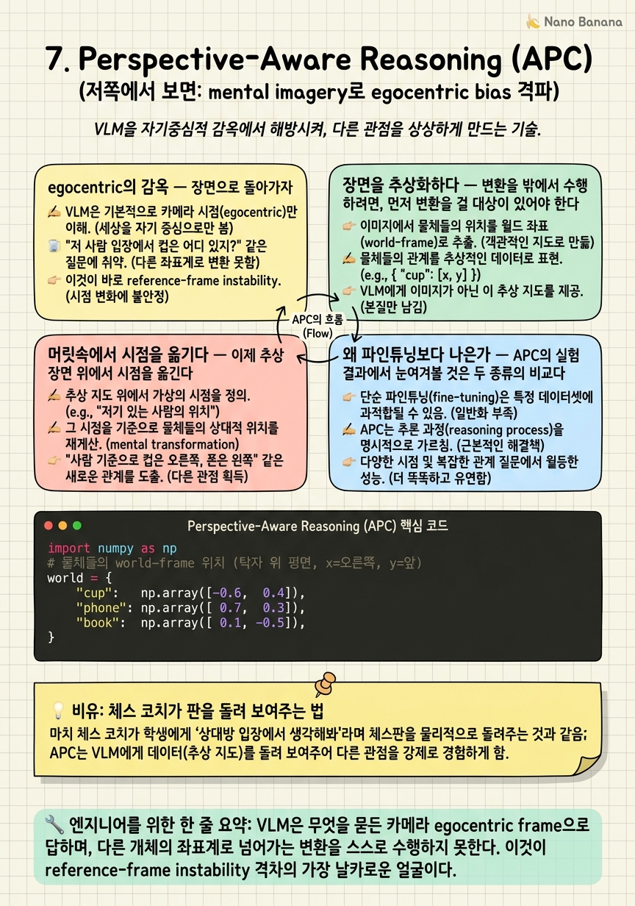

Perspective-Aware Reasoning (APC)
탁자를 사이에 두고 누군가 맞은편에 앉아 있다. 당신은 반대편에 서서 묻는다. 지금 저 사람 기준으로 컵은 그의 오른쪽인가 왼쪽인가. 당신 눈엔 왼쪽에 있는 컵이지만 그에겐 오른쪽이다. VLM에게 같은 것을 물으면, 그것은 끝내 자기 카메라의 왼쪽이라고 답한다. 좌표계를 그의 몸으로 옮기는 이 한 번의 변환을, 모델은 거부한다.

🎯 학습 목표
- VLM의 egocentric bias를 survey의 reference-frame instability 격차의 구체화로 진술하고, 왜 allocentric perspective-taking이 token-space 추론으로는 풀리지 않는지 설명한다.
- APC가 vision foundation model로 세우는 object-centric abstract scene representation의 구성 요소(detection·segmentation·depth)와 그것이 왜 변환의 전제인지 이해한다.
- perspective change를 rigid-body 변환 $p_{view}=R^\top(p_{world}-t)$로 정식화하고, 이 변환 아래에서 좌/우 판단이 어떻게 뒤집히는지 코드로 재현한다.
- APC가 baseline VLM과 fine-tuned spatial 모델을 동시에 능가하는 이유를, '기하를 외재화'와 '토큰 안에서 기대'의 구조적 차이로 설명한다.
Chapter 6은 공간지능을 taxonomy로 펼치며 어느 축이 가장 취약한지를 지목했다. 그 답은 perspective-taking, 곧 다른 존재의 시점에서 장면을 다시 보는 능력이었다. 앞선 챕터들도 같은 곳을 가리켰다. VSI-Bench의 오류 약 71%가 egocentric↔allocentric 변환 실패였고, SPHERE는 ego-대-allo에서 최대 33.4%p의 간극을 드러냈으며, OmniSpatial은 perspective-taking을 가장 약한 차원으로 명명했다. 진단은 수렴했다. 이제 필요한 것은 처방이다.
Perspective-Aware Reasoning via Mental Imagery Simulation (Phillip Y. Lee 외, KAIST·Stanford, Leonidas Guibas·Minhyuk Sung 포함, 2025)은 이 처방을 정면으로 내놓는다. 문제의 이름은 egocentric bias다. VLM은 무엇을 묻든 카메라 시점, 곧 자기 egocentric frame으로 답하며, 다른 개체의 좌표계로 넘어가는 변환을 스스로 수행하지 못한다. 이것은 survey가 지목한 세 번째 구조적 격차인 reference-frame instability가 가장 날카롭게 드러나는 지점이다.
APC의 착상은 변환을 모델의 머릿속에 맡기지 않고 밖으로 끌어내는 것이다. Abstract Perspective Change, 즉 vision foundation model로 장면을 object-centric abstract representation으로 세운 뒤, 그 추상 위에 명시적 기하 변환을 걸어 '저쪽에서 보면 어떻게 보이는가'를 시뮬레이션하고, 새 시점에 선 것처럼 VLM에 재질의한다. mental imagery를 은유가 아니라 rigid-body 변환이라는 실제 연산으로 외재화하는 것이다. 이 챕터는 왜 그 외재화가 token-space 추론과 fine-tuning을 동시에 앞서는지를 좌표계의 언어로 풀어낸다.
핵심 내용
egocentric의 감옥
장면으로 돌아가자. 탁자를 사이에 두고 두 사람이 마주 앉는다. 탁자 위 컵은 내 눈에는 왼쪽에 있다. 그러나 맞은편 사람에게 같은 컵은 오른쪽에 있다. '왼쪽'과 '오른쪽'은 물체의 속성이 아니라 관찰자 좌표계에 붙는 라벨이기 때문이다. 좌표계를 그의 몸으로 옮기면 라벨이 뒤집힌다. 이 한 번의 좌표계 이동이 perspective-taking의 전부다.
VLM은 이 이동을 하지 못한다. 무엇을 묻든 그것은 카메라 시점, 곧 자신의 egocentric frame으로 답한다. '저 사람의 오른쪽'을 물어도 모델은 자기 이미지의 오른쪽을 돌려준다. 좌표계를 바꿔 달라는 요청 자체가 모델에게는 수행할 수 없는 연산이다. 이것이 egocentric bias이며, 모델이 갇힌 감옥이다.
이 감옥은 survey가 지목한 세 번째 격차, reference-frame instability의 구체적 얼굴이다. 언어 토큰에는 egocentric과 allocentric을 잇는 명시적 변환 장치가 없다. 모델은 좌/우 라벨을 학습 데이터의 통계로 흉내 낼 뿐, 그 라벨이 어떤 좌표계에 매달려 있는지를 표현하지 못한다. 그래서 좌표계를 옮기라는 요구 앞에서 라벨은 옮겨지지 않고 그대로 남는다.
왜 언어적 추론을 더 시켜도 풀리지 않는지는 앞 챕터가 이미 보였다. 좌표계 변환은 언어 토큰 위 탐색으로 근사되지 않는 기하 연산이다. chain-of-thought로 '맞은편 사람 입장에서 생각하면...'이라고 길게 서술하게 해도, 그 서술을 실제 좌표 회전으로 옮겨 줄 표현이 모델 안에 없다. perspective-taking이 taxonomy에서 가장 약한 차원인 것은 우연이 아니라, 그것이 순수하게 기하학적인 요구이기 때문이다.
그렇다면 처방은 분명해진다. 변환을 모델의 내부에 기대하지 말고, 밖에서 명시적 기하로 수행한 뒤 그 결과를 모델에게 돌려주는 것이다. APC의 전체 설계가 이 한 문장에서 출발한다.

장면을 추상화하다
변환을 밖에서 수행하려면, 먼저 변환을 걸 대상이 있어야 한다. 픽셀 격자에는 회전을 걸 수 없다. 이미지를 아무리 돌려도 그것은 그림을 기울이는 것이지 시점을 옮기는 것이 아니다. 시점을 옮기려면 장면을 좌표를 가진 객체들의 배치로, 곧 object-centric abstract representation으로 바꿔야 한다.
APC는 이 추상화를 vision foundation model에 맡긴다. detection은 어떤 물체가 있는지와 그 2D 위치를 준다. segmentation은 각 물체의 경계와 방향 단서를 준다. depth estimation은 각 물체를 카메라로부터의 거리로 밀어내어, 2D 위치를 3D 좌표로 들어 올린다. 이 세 신호를 합치면 장면은 픽셀 더미에서 벗어나 '어디에 무엇이 어느 방향으로 놓였는가'라는 객체 좌표의 집합이 된다.
이 추상표현이 왜 결정적인지는 다음 절의 변환이 요구하는 형식을 보면 드러난다. rigid-body 변환은 점 \(p\)에 작용하는 연산이다. 장면이 점들의 집합으로 표현되어야만 그 위에 회전과 평행이동을 걸 수 있다. VFM은 바로 그 점들을 이미지에서 뽑아내는 프런트엔드다. 다시 말해 추상화는 '기하를 외재화'하기 위해 반드시 지나야 하는 관문이다.
여기서 각 챕터의 부품들이 어떻게 모이는지가 보인다. detection·segmentation은 SpatialRGPT가 도입한 region grounding의 후예이고, depth는 SpatialBot·SpatialVLM이 metric 감각을 위해 끌어들인 축이다. APC는 이들을 새 목적, 곧 좌표계 변환의 재료로 재조립한다. depth가 여기서 얼마나 정확해야 하는가라는 물음이 다음 챕터로 이어지는 다리다.
결과물은 하나의 작은 3D 장면 그래프다. 각 노드는 물체이고, 각 노드에는 world-frame 좌표와 대략의 방향(facing)이 붙는다. 이 추상 장면이야말로 '머릿속 이미지'의 실체이며, 이제 그 위에서 시점을 옮길 수 있다.

머릿속에서 시점을 옮기다
이제 추상 장면 위에서 시점을 옮긴다. '맞은편 사람 입장'이란 그 사람이 서 있는 위치 \(t\)와 그가 바라보는 방향(yaw)으로 정해지는 하나의 좌표계다. mental imagery simulation은 이 새 좌표계로 모든 물체의 좌표를 다시 표현하는 것, 곧 좌표계 변환에 지나지 않는다.
형식은 rigid-body 변환이다. world frame의 점 \(p_{world}\)를, 위치 \(t\)와 회전 \(R\)로 정의된 새 시점 frame으로 옮기는 식은 다음과 같다.
\[p_{view} = R^\top (p_{world} - t)\]
먼저 \(p_{world}-t\)로 원점을 관찰자에게 옮기고, \(R^\top\)로 관찰자의 바라보는 방향을 새 좌표축에 정렬한다. \(R\)이 world를 관찰자 방향으로 회전시키는 행렬이므로, 그 역인 \(R^\top\)가 world 점을 관찰자 로컬 좌표로 되돌린다. 이 한 줄이 '저쪽에서 보면'이라는 문장의 정확한 수학적 번역이다.
왜 이 변환이 좌/우를 뒤집는지는 부호로 드러난다. 로컬 frame에서 \(x>0\)이면 관찰자의 오른쪽, \(x<0\)이면 왼쪽이라 하자. 맞은편 사람은 나와 반대 방향을 보므로 그의 \(R\)은 나에 대해 180° 회전이고, \(R^\top\)를 적용하면 물체의 로컬 \(x\) 부호가 뒤집힌다. 내 frame에서 왼쪽이던 컵의 \(x<0\)이, 그의 frame에서는 \(x>0\), 곧 오른쪽이 된다. 좌/우 라벨의 반전이 행렬 곱 한 번에서 자동으로 튀어나온다.
변환이 끝나면 APC는 새 시점에서 본 장면 배치를 재구성해, 마치 VLM이 그 자리에 서 있는 것처럼 다시 질의한다. 모델은 더 이상 좌표계를 옮기라는 요구를 받지 않는다. 좌표계는 이미 밖에서 옮겨졌고, 모델은 그저 옮겨진 장면을 egocentric하게 읽기만 하면 된다. 자신이 잘하는 일만 하도록 문제를 재구성해 준 것이다. mental imagery가 은유에서 실제 연산이 되는 지점이 바로 여기다.

왜 파인튜닝보다 나은가
APC의 실험 결과에서 눈여겨볼 것은 두 종류의 비교다. 첫째, baseline VLM 대비 큰 폭의 향상. 둘째, 그리고 더 중요하게, perspective 과제로 fine-tuning한 spatial-reasoning 모델까지 앞선다는 점이다. 합성 벤치와 실사 이미지 벤치 양쪽에서 이 우위가 유지된다.
둘째 비교가 왜 결정적인가. fine-tuning은 변환을 여전히 모델 파라미터 안에, 곧 token-space 안에 욱여넣으려는 시도다. 더 많은 perspective 데이터로 좌표계 변환을 통계적으로 근사하게 만드는 것이다. 그러나 좌표계 변환은 데이터로 흉내 낼 함수가 아니라 정확한 기하 연산이다. 근사는 분포 안에서만 버티고, 새로운 각도·배치에서 무너진다.
| 접근 | 변환이 사는 곳 | 일반화 | 한계 |
|---|---|---|---|
| baseline VLM | 없음 (egocentric 고정) | 실패 | 좌표계를 아예 못 옮김 |
| fine-tuned spatial 모델 | token-space 파라미터 | 분포 내 근사 | 새 각도·배치에서 붕괴 |
| APC | 외재화된 명시적 기하 | 각도·배치 무관 | VFM 추상화 품질에 의존 |
APC의 우위는 변환을 사는 곳을 바꾼 데서 온다. rigid-body 변환은 파라미터가 아니라 명시적 기하 모듈 안에 산다. \(R^\top(p-t)\)는 어떤 각도에도 정확히 성립하는 닫힌 형식이라, 훈련 분포 밖의 시점에서도 동일하게 옳다. token 안에서 기대하던 것을 밖으로 꺼내 정확한 연산으로 대체했기 때문에, 데이터를 아무리 부어도 근사에 머무는 fine-tuning을 구조적으로 넘어선다.
이 결과의 함의는 방법 하나를 넘어선다. 공간추론에서 무엇을 학습으로 밀고 무엇을 명시적 기하로 남길 것인가라는 설계 원칙을 제시한다. semantic 매칭처럼 통계가 잘 듣는 부분은 모델에, 좌표계 변환처럼 정확성이 요구되는 부분은 기하 모듈에 맡기는 분업이다. VSI-Bench가 던진 '처방은 더 많은 추론이 아니라 더 나은 표현'이라는 명제가, APC에서 '더 나은 표현이란 외재화된 기하'라는 구체적 형태로 응답받는다.
💡 비유로 이해하기
체스를 가르칠 때, 초보에게 '상대 입장에서 이 수가 어떻게 보이는지 상상해봐'라고 말하면 대개 실패한다. 머릿속에서 판 전체를 180° 뒤집어 흑과 백의 좌우를 통째로 반전시키는 일은, 말로 아무리 재촉해도 잘 되지 않는다. 이것이 VLM에게 '맞은편 사람 시점에서 답하라'고 요구하는 상황이다.
좋은 코치는 다르게 한다. 물리적으로 체스판을 집어 상대 쪽으로 돌려놓는다. 이제 학생은 상상할 필요가 없다. 돌아간 판을 그냥 자기 눈으로 읽으면, 그것이 곧 상대가 보던 장면이다. 어려운 정신적 회전이 판을 돌리는 한 번의 물리적 동작으로 외재화되었고, 남은 일은 학생이 가장 잘하는 것, 즉 눈앞의 판을 읽는 것뿐이다.
APC가 하는 일이 정확히 이 판 돌리기다. object-centric abstract scene은 집어 들 수 있는 체스판이고, rigid-body 변환 \(R^\top(p-t)\)는 판을 상대 쪽으로 돌리는 동작이다. VLM은 상상을 강요받는 대신, 이미 돌아간 장면을 egocentric하게 읽기만 하면 된다. fine-tuning은 반대로 학생에게 '판 뒤집는 상상'을 수천 번 연습시키는 격이라, 익힌 배치에서는 그럴듯해도 낯선 배치에서 다시 헤맨다.
💻 코드 예시
탁자 위 물체들의 world 좌표와, 맞은편에 앉은 관찰자(위치 \(t\) + yaw)를 주고, rigid-body 변환 \(p_{view}=R^\top(p_{world}-t)\)로 물체를 관찰자 로컬 frame으로 옮긴다. 그런 다음 '관찰자의 오른쪽에 무엇이 있나'를 로컬 \(x\) 부호로 판정한다. 나(egocentric)의 답과 맞은편 사람(allocentric)의 답이 좌/우에서 뒤집히는 것을 보인다. 이것이 APC가 밖에서 수행하는 mental imagery 변환의 최소 재현이다.
import numpy as np
# 물체들의 world-frame 위치 (탁자 위 평면, x=오른쪽, y=앞)
world = {
"cup": np.array([-0.6, 0.4]),
"phone": np.array([ 0.7, 0.3]),
"book": np.array([ 0.1, -0.5]),
}
# 카메라(나)는 world 원점에서 +y를 바라본다 (egocentric = world와 정렬)
cam_pos, cam_yaw = np.array([0.0, 0.0]), 0.0
# 맞은편 사람: 탁자 반대편에서 나를 마주본다 -> +y 위쪽, yaw=180deg
other_pos, other_yaw = np.array([0.0, 1.2]), 180.0
def rot(deg):
t = np.radians(deg); c, s = np.cos(t), np.sin(t)
return np.array([[c, -s], [s, c]])
def to_view(p_world, view_pos, view_yaw):
# p_view = R(yaw)^T (p_world - t) : world -> viewpoint local frame
return rot(view_yaw).T @ (p_world - view_pos)
def side(p_view):
# local x>0 -> 관찰자의 오른쪽, x<0 -> 왼쪽
return "RIGHT" if p_view[0] > 0 else "LEFT"
print("target | my(ego) | their(allo)")
for name, p in world.items():
ego = to_view(p, cam_pos, cam_yaw)
allo = to_view(p, other_pos, other_yaw)
flip = " <== FLIPS" if side(ego) != side(allo) else ""
print(f"{name:7s} | {side(ego):5s} | {side(allo):5s}{flip}")world는 detection·depth로 세운 object-centric abstract scene의 최소판으로, 각 물체가 world 좌표를 갖는다. 함수 to_view의 한 줄 rot(view_yaw).T @ (p_world - view_pos)가 바로 rigid-transform \(p_{view}=R^\top(p_{world}-t)\)다. 먼저 관찰자 위치를 빼 원점을 옮기고, \(R^\top\)로 관찰자가 바라보는 방향에 좌표축을 정렬한다. side는 로컬 \(x\)의 부호로 좌/우를 판정한다. 나(cam_yaw=0)에게 컵은 \(x<0\)이라 LEFT지만, 180° 돌아앉은 맞은편 사람의 frame에서는 \(R^\top\)가 \(x\) 부호를 뒤집어 RIGHT가 된다. 세 물체 모두 좌/우가 뒤집히며(<== FLIPS), egocentric 답과 allocentric 답이 갈라진다. VLM이 못 하던 좌표계 변환이 행렬 곱 한 번으로 정확히 수행되는 것, 이것이 APC의 외재화된 기하다.
🏭 현업에서의 평가
✅ 시니어가 보는 것
- egocentric bias를 reference-frame instability의 구체화로 진술하고, perspective-taking을 rigid-body 변환 $R^\top(p-t)$로 정식화할 수 있는가
- VFM(detection·segmentation·depth)으로 object-centric abstract scene을 세우는 것이 '기하를 외재화'하기 위한 전제임을 이해하는가
- 학습으로 근사할 것과 명시적 기하로 남길 것을 나누는 분업 관점에서, 왜 APC가 fine-tuning보다 일반화되는지 설명하는가
⚠️ 레드 플래그
- perspective-taking 실패를 'perspective 데이터로 더 fine-tuning하면 된다'로 처방한다 (분포 밖에서 붕괴하는 접근)
- 좌/우를 물체의 고정 속성으로 다루고, 그것이 관찰자 좌표계에 매달린 라벨임을 놓친다
- mental imagery를 프롬프트 은유로만 이해하고, 그것이 추상 장면 위 실제 rigid-body 변환으로 외재화되었음을 못 짚는다
🎤 예상 인터뷰 질문 (클릭하면 모범답안)
VLM이 '맞은편 사람의 오른쪽'을 못 맞히는 이유를 좌표계 언어로 설명하고, APC가 이를 어떻게 푸는지 말하라.
좌/우는 물체 속성이 아니라 관찰자 좌표계에 붙는 라벨인데, VLM은 언제나 카메라 egocentric frame으로만 답하는 egocentric bias에 갇혀 좌표계를 옮기지 못한다. 이는 survey의 reference-frame instability 격차의 구체화다. APC는 vision foundation model로 장면을 object-centric abstract scene으로 세운 뒤, 그 위에 rigid-body 변환 \(p_{view}=R^\top(p_{world}-t)\)를 걸어 좌표계를 밖에서 옮기고, 새 시점에 선 것처럼 VLM에 재질의한다. 모델은 좌표계를 옮기는 대신 이미 옮겨진 장면을 egocentric하게 읽기만 하면 된다.
APC가 baseline뿐 아니라 fine-tuned spatial 모델까지 앞서는 이유는 무엇인가?
fine-tuning은 좌표계 변환을 여전히 token-space 파라미터 안에서 통계적으로 근사하려는 시도라, 훈련 분포 안에서만 버티고 새 각도·배치에서 무너진다. 좌표계 변환은 데이터로 흉내 낼 함수가 아니라 \(R^\top(p-t)\)라는 정확한 닫힌 형식의 기하 연산이기 때문이다. APC는 이 변환을 파라미터가 아니라 명시적 기하 모듈에 두어 어떤 시점에서도 정확히 성립시킨다. 변환이 '사는 곳'을 token 안에서 밖으로 옮긴 것이 구조적 우위의 원천이다.
APC 파이프라인에서 object-centric abstract scene 단계가 왜 없어서는 안 되는가?
rigid-body 변환은 점 \(p\)에 작용하는 연산이라, 장면이 좌표를 가진 객체들의 집합으로 표현되어야만 회전·평행이동을 걸 수 있다. 픽셀 격자는 돌려도 그림이 기울 뿐 시점이 옮겨지지 않는다. 그래서 detection으로 물체와 위치를, depth로 3D 좌표를, segmentation으로 방향 단서를 뽑아 object-centric 추상표현을 세우는 것이 변환의 전제다. 이 추상화가 곧 '머릿속 이미지'의 실체이며, 기하를 외재화하기 위해 반드시 지나야 하는 관문이다.
✨ 핵심 요약
egocentric bias가 감옥이다
VLM은 무엇을 묻든 카메라 egocentric frame으로 답하며, 다른 개체의 좌표계로 넘어가는 변환을 스스로 수행하지 못한다. 이것이 reference-frame instability 격차의 가장 날카로운 얼굴이다.
좌/우는 좌표계에 매달린 라벨
왼쪽·오른쪽은 물체의 속성이 아니라 관찰자 좌표계에 붙는 라벨이다. 좌표계를 옮기면 라벨이 뒤집힌다. perspective-taking은 이 좌표계 이동 한 번이 전부다.
변환의 재료는 추상 장면
픽셀에는 회전을 걸 수 없다. detection·segmentation·depth로 세운 object-centric abstract scene이 있어야 그 위에 rigid-body 변환을 걸 수 있다. 추상화는 기하 외재화의 관문이다.
mental imagery = rigid-body 변환
'저쪽에서 보면'은 $p_{view}=R^\top(p_{world}-t)$라는 정확한 좌표계 변환이다. 맞은편 시점의 180° 회전이 로컬 $x$ 부호를 뒤집어 좌/우 반전을 자동으로 만든다.
모델이 잘하는 일만 시킨다
APC는 좌표계를 밖에서 옮긴 뒤 새 시점에 선 것처럼 재질의한다. 모델은 변환을 강요받는 대신, 이미 옮겨진 장면을 egocentric하게 읽기만 하면 된다.
fine-tuning을 넘어서는 이유
fine-tuning은 변환을 token-space에 근사해 분포 밖에서 무너진다. APC는 변환을 명시적 기하 모듈에 두어 어떤 각도에도 정확하다. 변환이 사는 곳을 바꾼 것이 우위의 원천이다.
학습과 기하의 분업
semantic 매칭처럼 통계가 듣는 부분은 모델에, 좌표계 변환처럼 정확성이 필요한 부분은 기하 모듈에 맡긴다. APC는 공간추론의 이 설계 원칙을 실증한다.
- Phillip Y. Lee et al. (2025). Perspective-Aware Reasoning in Vision-Language Models via Mental Imagery Simulation. arXiv 2025. arXiv:2504.17207